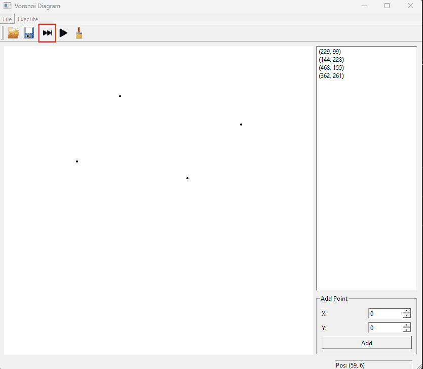
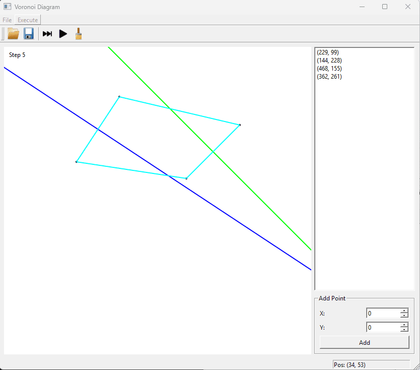
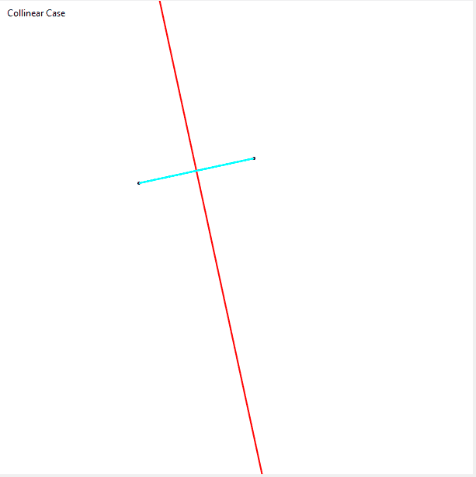
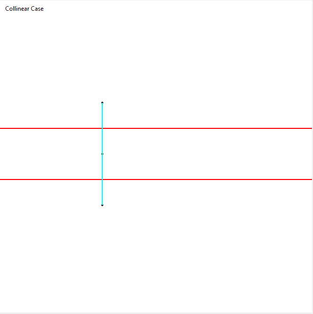
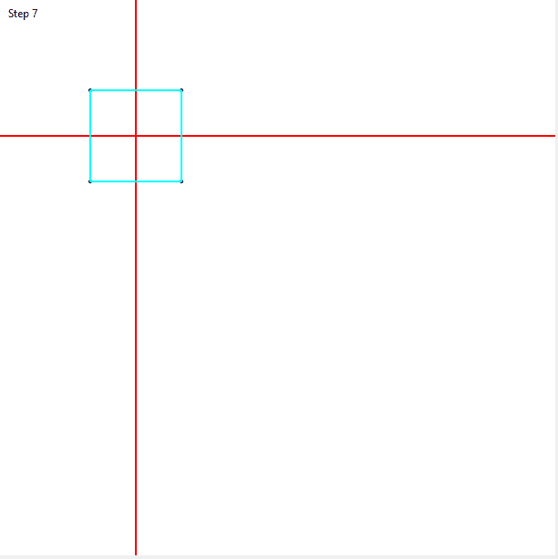
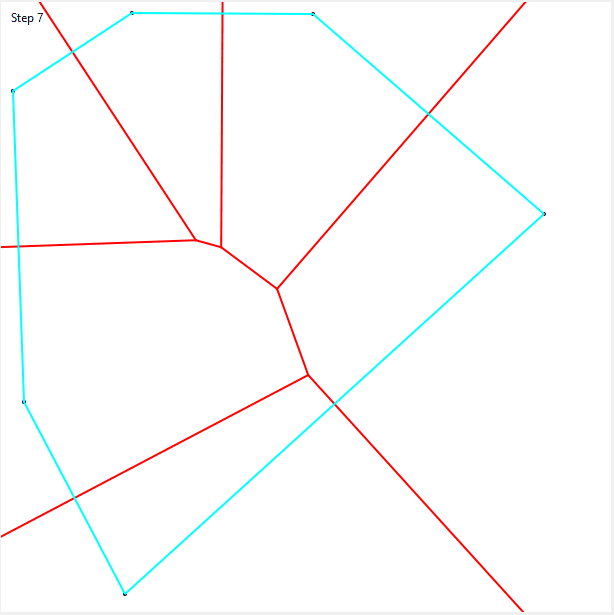
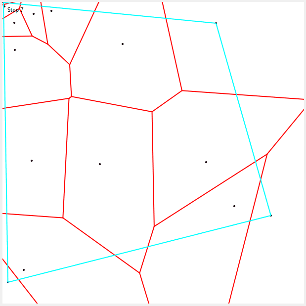
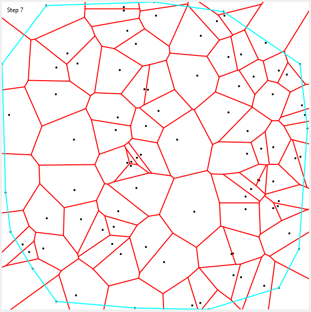
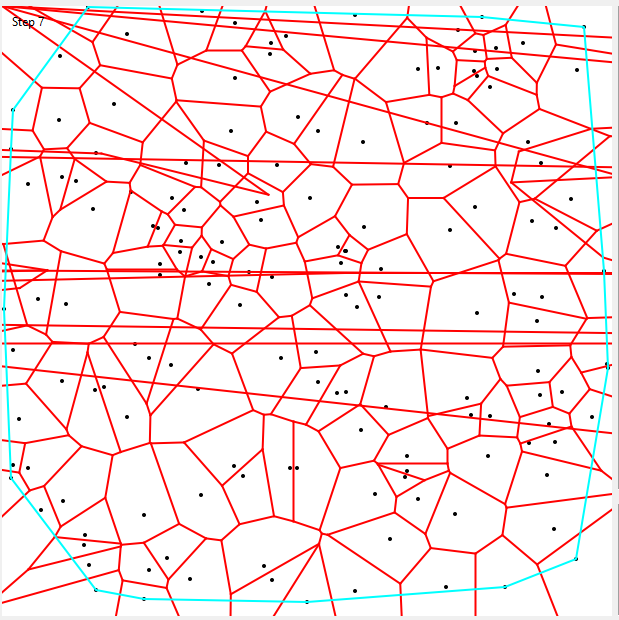
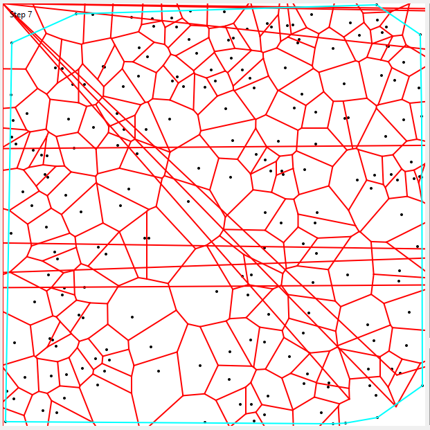

menu: File -> Read input text，或是左上角 toolbar: Open (自動判斷輸入或輸出格式)。menu: File -> Read output text，或是左上角 toolbar: Open (自動判斷輸入或輸出格式)。#雙點測試
2
200 200
200 200
0
P 103 200
P 193 64
P 193 370
P 283 200
E 0 34 193 161
E 0 363 193 261
E 193 161 193 261
E 193 161 437 0
E 193 261 600 476
menu: File -> Savetoolbar: Save
File: Read input text, Read output text, SaveExecute: Step, Run, ClearOpen, Save, Step, Run, ClearVoronoiDiagram.exe，同個資料夾下的 Qt6Core.dll, Qt6Gui.dll, Qt6Widgets.dll 與 platforms 資料夾為軟體執行之必要條件。





QPointF 與 QLineF 類別實作。#include <QPointF>
#include <QLineF>
// 儲存結果
struct VoronoiResult {
QVector<QLineF> edges; // Voronoi edges
QVector<QPair<QPointF, QPointF>> endPoints; // Record which two points (p1, p2) generated edges[i]
QVector<QPointF> convexHull; // Sort in counterclockwise order
};
// 用於 step by step
struct VoronoiStep {
QVector<QLineF> currentEdges; // All edges at the current step (including left, right, and hyperplanes)
QVector<QPointF> currentHull; // The merged convext hull, the left one, the right one
QVector<int> edgeTypes; // Indicates the edge type (0: Normal, 1: Left voronoi, 2: Right voronoi, 3: Hyperplane)
QString description; // For debugging
int split; // 0: Merged convex hull, not 0: lefthull = currentHull.mid(0, split), righthull = currentHull.mid(split)
};
// 使 QMap 能以 QPointF 作為 Key (容許些微浮點數誤差)。
class PointKey {
public:
QPointF p;
PointKey(QPointF _p) : p(_p) {}
bool operator<(const PointKey& other) const;
};
(0, 0)，往右為 +x 軸方向，往下為 +y 軸方向。
VoronoiResult VoronoiDiagram::divideAndConquer(const QVector<QPointF>& points) {
VoronoiResult res;
int n = points.size();
if (n == 1)
res.convexHull.append(points[0]);
else if (n == 2)
res = solveCollinear(points);
else if (n == 3)
res = voronoi3(points);
else {
// Divide
int m = n / 2;
QVector<QPointF> leftPoints = points.mid(0, m), rightPoints = points.mid(m);
VoronoiResult leftRes = divideAndConquer(leftPoints), rightRes = divideAndConquer(rightPoints);
// Merge
res = merge(leftRes, rightRes);
}
return res;
}

0 (< 0): 拇指的方向垂直進入 (出來) xy 平面，其餘四指順 (逆) 時針旋轉
U, V, W, P, Q, R, S 為 merge 後的所有端點。從 upper tangent 開始
↓
計算目前左右點 (L, R) 的垂直平分線
↓
找此平分線最先與哪一條 Voronoi edge 相交
↓
與左側邊相交 → 更新 L
與右側邊相交 → 更新 R
↓
重複此步驟直到抵達 lower tangent
| Step | 動作 |
|---|---|
| 1 | 畫左 Voronoi |
| 2 | 畫右 Voronoi |
| 3 | 畫左 convex hull |
| 4 | 畫右 convex hull |
| 5 | 畫 merged convex hull |
| 6 | 畫 hyperplane |
| 7 | 消線，最終結果 |
















QPointF, QLineF）可直接應用。此外，僅需一行程式碼 painter.setRenderHint(QPainter::Antialiasing); 即可實現反鋸齒效果，Slots and Signals 的機制也讓互動設計更直覺。